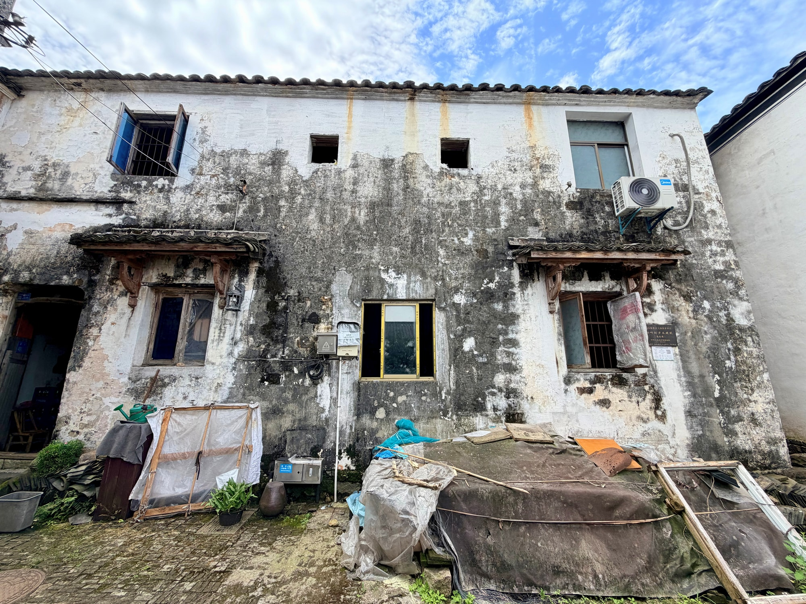
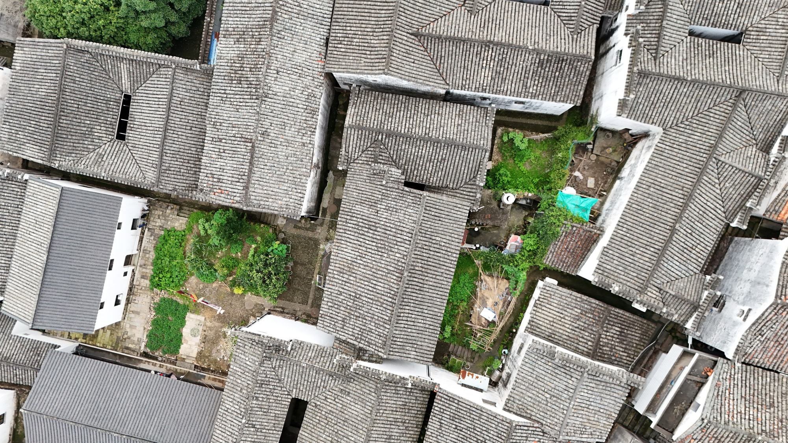

国保传统民居
屋脊之间的一座小楼隐逸楼
隐逸楼是全国重点文物保护单位“新叶村乡土建筑”中的一座传统民居。“楼”字留在名称里，也让它在村中众多堂、居、宅之间拥有了鲜明的识别方式。
01
沿巷看见侧墙

沿着村巷接近隐逸楼，侧墙与通行空间共同收拢视线。这里适合从贴近地面的尺度观察一座老宅如何嵌入街巷，而不是把它当成孤立的单体。
02
从屋面辨认村落

从较高处望去，隐逸楼的屋面回到新叶村连续的屋顶之中。单体与聚落同时显现，也说明这座建筑的价值既在自身，也在它与周围老宅共同形成的整体环境。